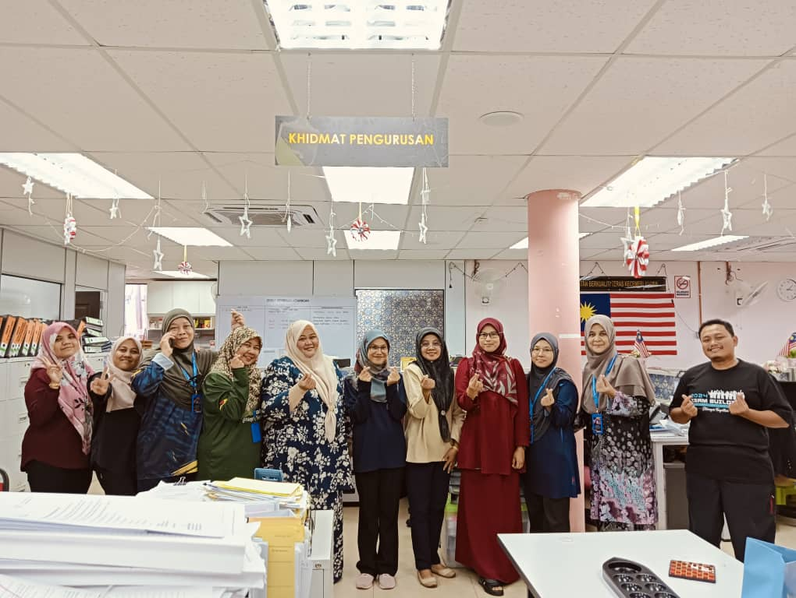
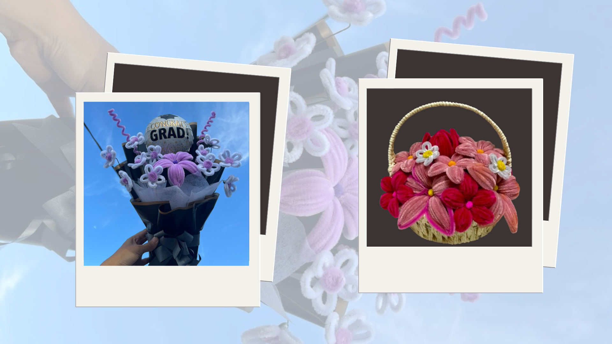

1. Experience in Industrial Training
During my industrial training at Pejabat Daerah dan Tanah Rembau, I gained hands-on experience in managing assets, organizing events, and working in a professional environment. It provided valuable insight into administrative processes and teamwork. I was actively involved in asset verification, where I learned how to maintain accurate records and ensure compliance with organizational standards. This experience also enhanced my ability to adapt to new challenges and strengthened my communication skills through regular interactions with colleagues and supervisors. It was a unique opportunity to apply the theoretical knowledge I gained during my Diploma in Information Management studies to real-world scenarios. Overall, the training was instrumental in shaping my professional development and preparing me for future career opportunities in the field of information and administrative management.
2. Selling Bouquet Flowers
I also ventured into selling bouquet flowers, which I initially started just for fun. To my surprise, I received a lot of positive responses from friends and family, which motivated me to continue and expand this small endeavor. Selling flowers not only allowed me to explore my creative side but also provided me with several valuable benefits and skills. This experience gave me a sense of fulfillment and confidence, as I saw the joy my creations brought to others. It started as a simple hobby but became a meaningful journey that not only enhanced my creativity but also allowed me to grow personally and professionally.